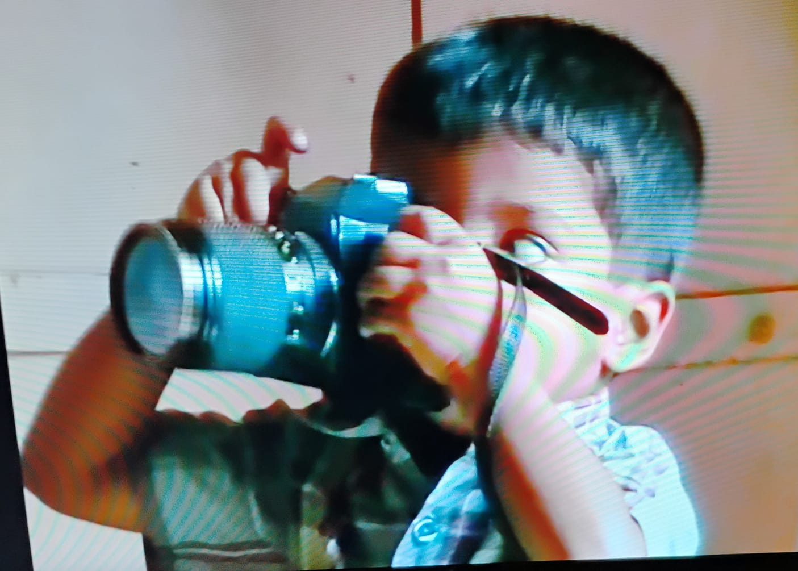

The Human Element
Unscripted portraits, candid glances at weddings, and pure emotion. Technique exists to serve real human stories.
It was simply the backdrop of my life.

Growing up with a father who was a photographer meant that cameras, memory cards, and computer screens were as familiar to me as childhood toys. Surrounded by the craft from an early age, a deep-seated curiosity for capturing moments took root naturally.
My first real assignment wasn't a grand event, but the quiet world right outside my window. Drawn to the variety of birds visiting near my home, I began borrowing my father's gear to study their movements and frame their fleeting perches. Sharing those early bird photographs on Instagram became my first window into storytelling, connecting me with an audience that appreciated the patience behind each shot.
That creative spark turned into a true focus when I entered my B.Tech program and joined CLICK.CADETS, the campus photography club. Surrounded by fellow creative minds passionate about photography and cinematography, I found a community that pushed my boundaries. Working alongside these like-minded peers, we sharpened our vision, refined our visual language, and ultimately took the leap from passionate observers to launching our professional photography practice.
Today, my approach is rooted in that same spirit of quiet observation. Whether documenting a wedding, capturing an intimate portrait, or observing wildlife, I focus on candid, natural-light storytelling, preserving raw human emotion and timeless moments in their truest form.
Work together ↗Unscripted portraits, candid glances at weddings, and pure emotion. Technique exists to serve real human stories.
The intersection of technical mastery and intuition, shaped by family, community, and wildlife observation.
Tactile, natural, unforced imagery with a preference for soft light and honest textures over heavy staging.